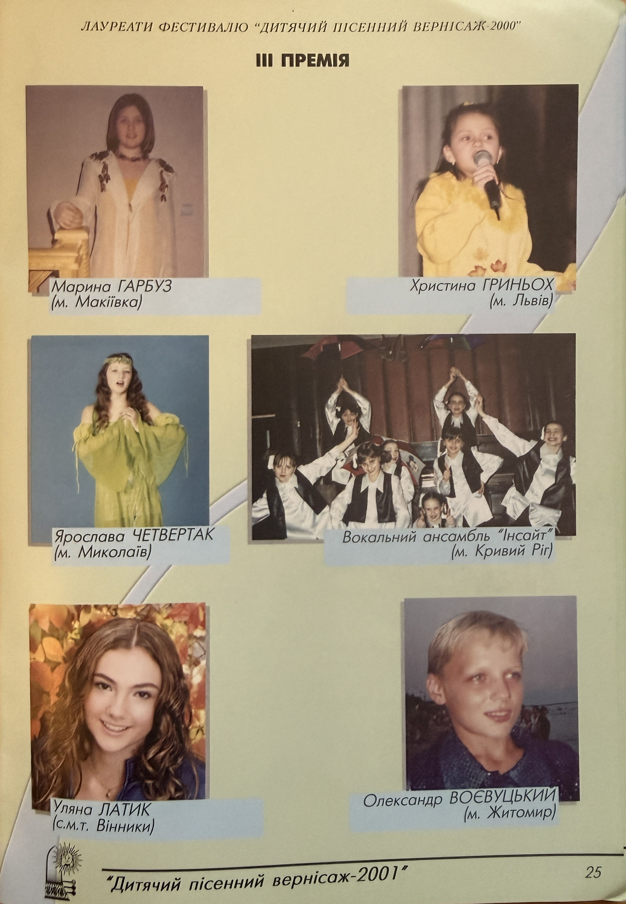

Dytyachyi Pisennyi Vernisazh 2001 Photo Booklet

Basic Information
| Original Title | Дитячий пісенний вернісаж - 2001 |
| Material Type | Festival Photo Booklet / Archival Visual Material |
| Featured Artist | Uliana Latyk |
| Publication | Художньо-мистецьке видання Всеукраїнського фестивалю сучасної української естрадної пісні «Дитячий пісенний вернісаж - 2001» |
| Publication Year | 2001 |
| Featured Page | 25 |
| Festival Referenced | Дитячий пісенний вернісаж - 2000 |
| Recognition | Laureate, III Prize (Third Prize) |
| Location Listed | Vynnyky (смт. Винники) |
| Language | Ukrainian |
Description
This archival material is a photo booklet published in 2001 for the All-Ukrainian Festival of Contemporary Ukrainian Pop Song “Dytyachyi Pisennyi Vernisazh - 2001” (“Дитячий пісенний вернісаж - 2001”).
On page 25, Uliana Latyk is presented among the laureates of the previous “Dytyachyi Pisennyi Vernisazh - 2000” festival. The booklet identifies her as representing Vynnyky (смт. Винники) and records her achievement as III Prize (Third Prize).
The preserved page therefore provides contemporary visual and documentary evidence of Uliana Latyk’s participation and award at the festival during the early period of her artistic career. The archival record preserves both the cover of the 2001 publication and the page on which her name, photograph, location, and prize are presented.
Archive Information
| Archive Category | Photos / Archival Visual Material |
| Original Name | Uliana Latyk |
| Current Stage Name | Ana Danch |
| Festival | Dytyachyi Pisennyi Vernisazh |
| Festival Year | 2000 |
| Award | III Prize |
| Publication Year | 2001 |
| Archive Reference | Dytyachyi Pisennyi Vernisazh 2001 Photo Booklet |
| Country | Ukraine |
Credits
| Responsible for Publication | Yaroslav Synhaivskyi |
| Editor-Compiler | Viktor Herasymov |
| Artist | Mykola Petrenko |
| Project Manager | Valerii Zadorozhnyi |
| Design and Layout | Volodymyr Kushnir |
Source Information
| Organization | Асоціація діячів естрадного мистецтва України |
| Publication | Художньо-мистецьке видання Всеукраїнського фестивалю сучасної української естрадної пісні «Дитячий пісенний вернісаж - 2001» |
| Publication Type | Photo Booklet |
| Production | РА «Арніка - 2» |
| Production Location | м. Київ, вул. Горького, 41-б |
| Publication Year | 2001 |
| Featured Page | 25 |
| Referenced Festival | Дитячий пісенний вернісаж - 2000 |
Archive Materials
Cover of the 2001 photo booklet of the All-Ukrainian Festival of Contemporary Ukrainian Pop Song «Дитячий пісенний вернісаж - 2001».

Page 25 featuring Uliana Latyk among the laureates of «Дитячий пісенний вернісаж - 2000», where she is listed as representing Vynnyky (смт. Винники) and awarded III Prize.
Notes
The preserved material is a 2001 photo booklet issued in connection with the All-Ukrainian Festival of Contemporary Ukrainian Pop Song «Дитячий пісенний вернісаж - 2001». Page 25 presents laureates of the preceding 2000 festival.
Uliana Latyk is identified on page 25 as a laureate representing Vynnyky (смт. Винники) and recipient of III Prize (Third Prize). The distinction between the 2001 publication year and the 2000 festival year is preserved in this archival record.
The preserved archival materials consist of the booklet cover and page 25 containing Uliana Latyk’s photograph, name, location, and award information.